:::
網站導覽
北美館
展覽資料庫
TFAM
EXHIBITION ARCHIVE
網站導覽
關於我們
研究文獻
展覽類型
:::
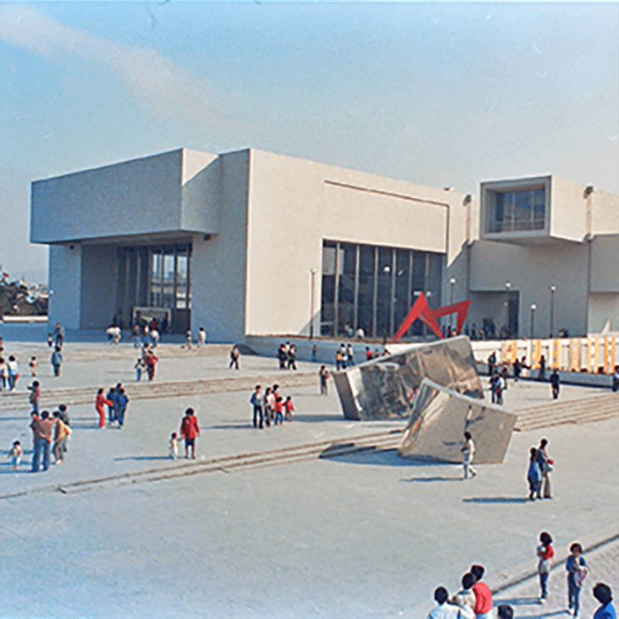
北美館建築
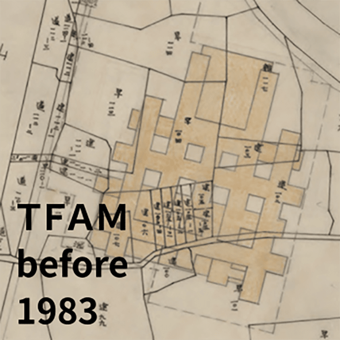
1983
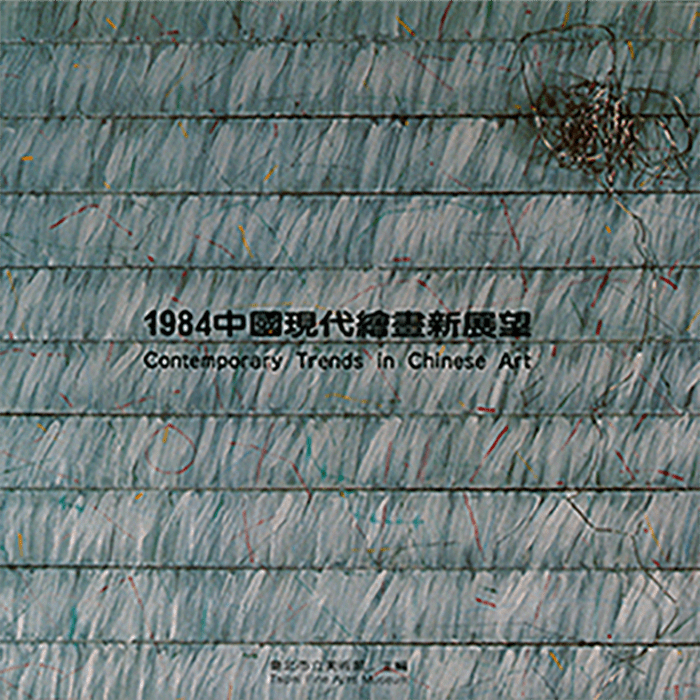
1984
1984中國現代繪畫新展望
法國VIDEO藝術聯展
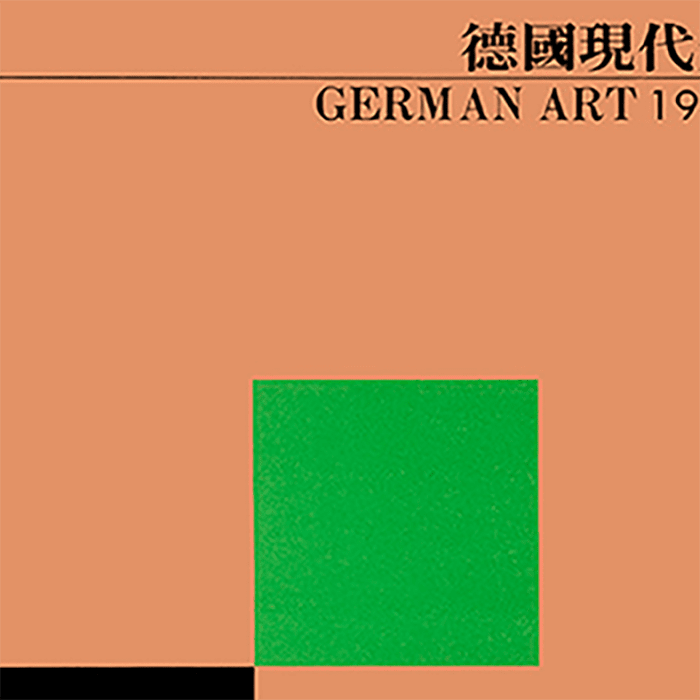
1985
1985中華民國現代雕塑特展
中國建築之美特展
色彩與造形 - 前衛‧裝置‧空間特展
德國現代美術展1945-1985
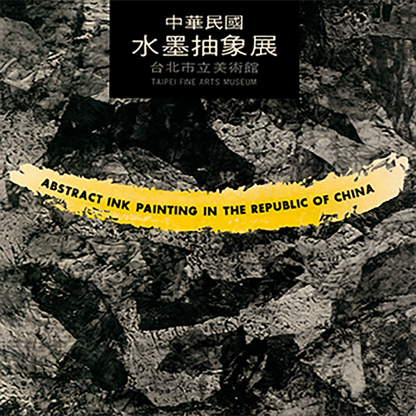
1986
中國現代繪畫回顧展
印象派素描展：
第十四屆米羅國際素描展
早期畫家作品展 - 石川欽一郎師生特展
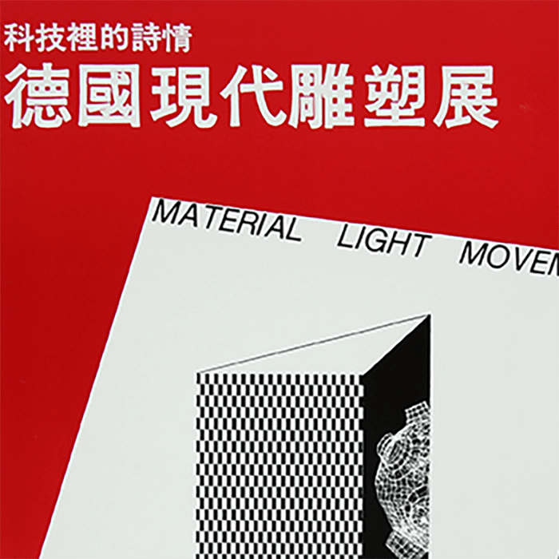
1987
眼鏡蛇藝術群(1949-1951)及其十年後 之發展
實驗藝術 - 行為與空間展
科技裡的詩情 - 德國現代雕塑展
1949-1986 查理摩爾建築藝術展
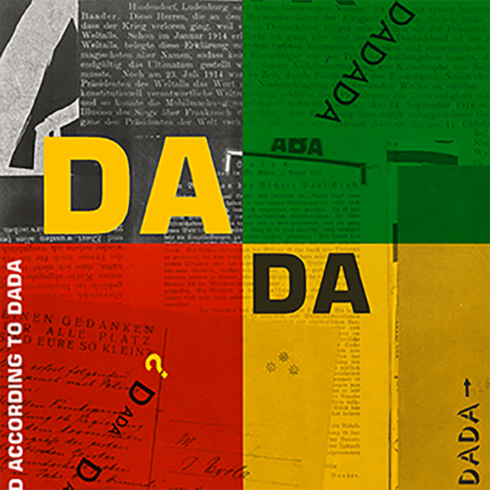
1988
中國─巴黎：早期旅法畫家回顧展
德國拼貼藝術展
德國「新藝術運動」展 1890-1925
達達的世界
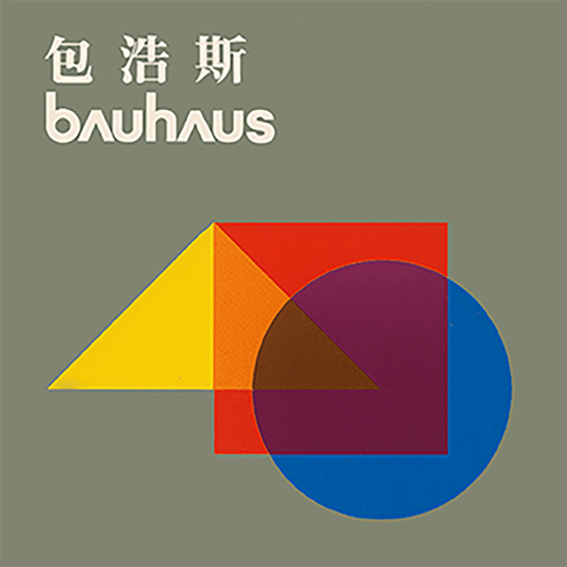
1989
畢卡索橡膠版畫展
包浩斯 1919-1933
1990
台灣早期西洋美術回顧展
保羅‧德爾沃的超現實世界
尼斯地區當代藝術展
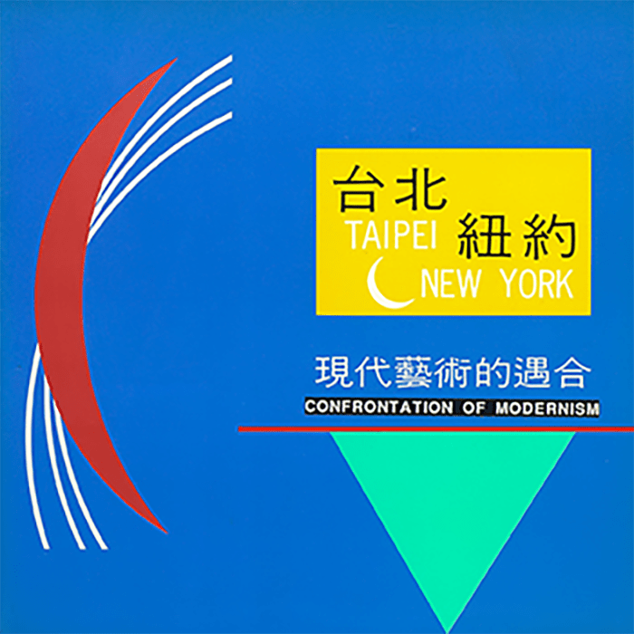
1991
心象與物象 - 美國新抽象
比利時當代藝術展
台北─紐約：現代藝術的遇合
米羅的夢幻世界
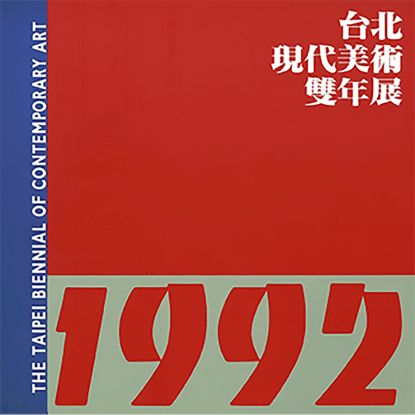
1992
1992台北現代美術雙年展
阿雷欽斯基版畫回顧展
延續與斷裂 - 宗教‧巫術‧自然
江兆申書畫展
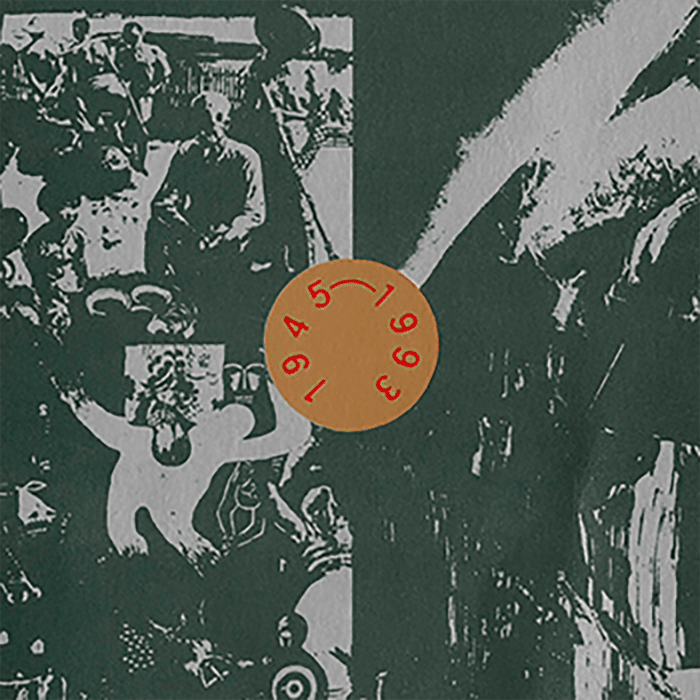
1993
羅丹雕塑展
台灣美術新風貌 1945-1993
荷蘭當代錄影藝術展
文化與認同：澳洲當代藝術展
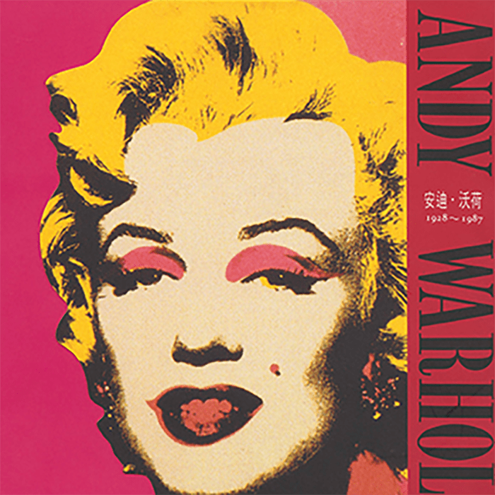
1994
1994台北現代美術雙年展
陳澄波百年紀念展
劉錦堂百年紀念展
安迪‧沃荷 1928-1987